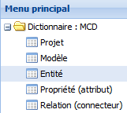
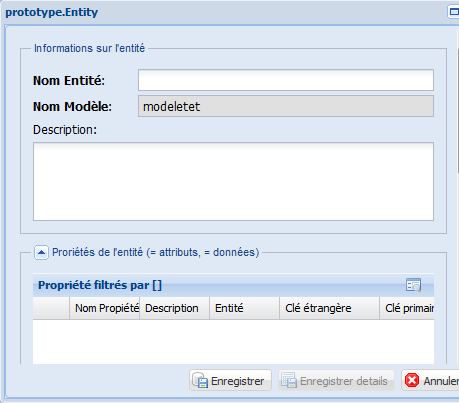

La troisième étape pour construire un prototype consiste à créer les entités du modèle conceptuel de données. Vous allez créer les entités à l’intérieur du modèle créé à l’étape antérieure. Un modèle de données peut contenir plusieurs entités, mais une entité peut appartenir à un seul modèle.
Il y a deux façons de créer les entités d’un modèle. La première façon est de les créer au même moment qu’un nouveau modèle. Quand un nouveau modèle est créé, les contrôles d’édition s’activent sur la grille des « entités du modèle » du même formulaire. En cliquant sur le bouton ajouter de cette grille, un nouveau formulaire s’ouvrira pour remplir les informations concernant les entités. Les entités sont créées une par une.
La deuxième façon de créer les entités est à partir du menu principal.
Nous allons explorer les deux façons dans le texte qui suit.
Créer une nouvelle entité à partir du menu principal
Figure 37 : ajouter une entite
À partir du menu principal, cliquez deux fois sur « Entité » pour ouvrir l’onglet Entité qui donne accès à la grille principale.
Cliquez sur le bouton Éditer du menu de fonctionnalités pour rentrer en mode d’édition (voir la fonction Éditer pour plus détails).
Cliquez sur le bouton Ajouter, un formulaire sera affiché sur l’écran.
Dans le formulaire, remplissez : le nom de l’entité (information obligatoire)
le nom du modèle (information obligatoire). Cliquez sur le bouton pour sélectionner le modèle de la liste.
la description de l’entité (information optionnelle). Cliquez sur le bouton Enregistrer de la fenêtre.
Créer une nouvelle entité à partir du formulaire du modèle
Figure 38 : ajouter une entité détails
Notez dans les deux façons présentées dans ce texte que quand vous cliquez sur le bouton Enregistrer, la grille « Propriétés filtrés par ” ” » située après le nom du modèle affiche les contrôles d’édition (voir figure 39). À partir de cette grille, il est possible d’ajouter les propriétés d’une entité en cliquant sur le bouton « Ajouter » du menu de contrôles. Ceci est une de deux façons d’ajouter les propriétés d’une entité. Passez à l’étape créer une propriété pour continuer avec la démarche. .. image:: ./images/entite2.png Figure 39 : ajouter une entité détails